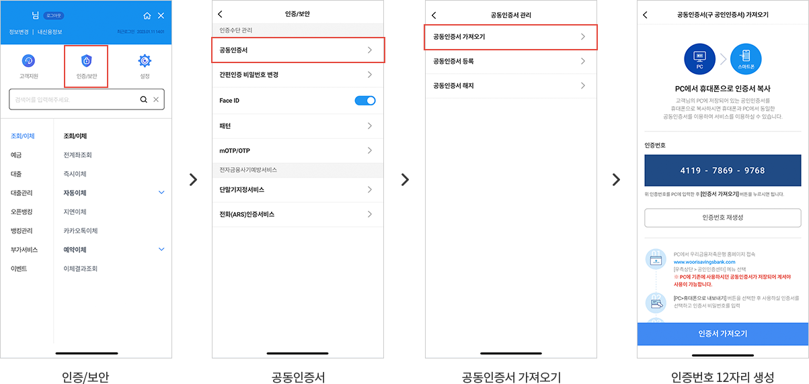
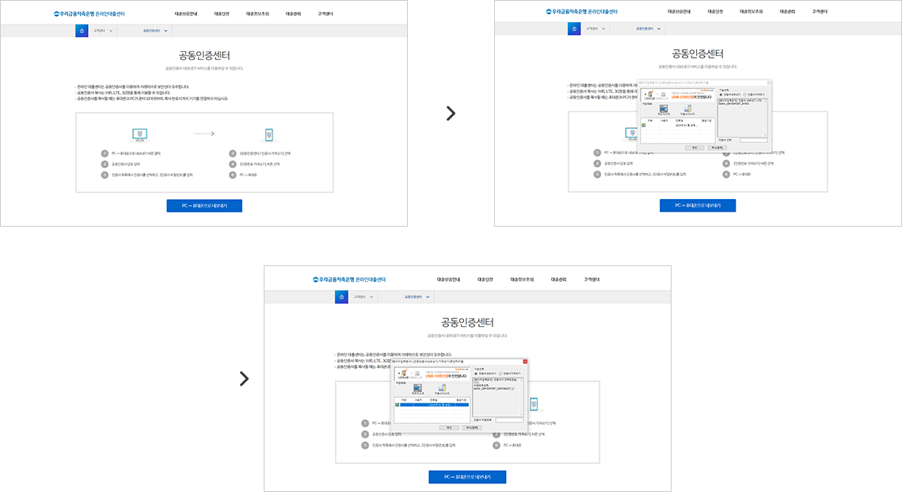

저축은행 중앙회 스마트뱅킹 서비스 이용을 위하여 PC에서 발급된 공인인증서를 스마트폰으로 복사하셔야 합니다.
공인인증서 복사관련 문의 : 1544-3637 (디지털뱅킹고객센터)
현재 IE브라우저에서만 인증서 복사가 가능하며, 타 브라우저는 향후 지원 예정입니다.
STEP 01스마트폰 화면
인증/보안 → 공동인증서 → 공동인증서가져오기 → PC에 인증번호 12자리 입력 후 인증서 가져오기 선택
 공동인증서 > 공동인증서 가져오기 > 인증번호 12자리 생성">STEP 02PC 화면
PC → 휴대폰으로 내보내기 버튼 클릭 → 스마트폰에 복사할 인증서 선택 후 비밀번호 입력 → 스마트폰에 생성된 인증번호 12자리 입력 후 복사 진행
 공동인증서 > 공동인증서 가져오기 > 인증번호 12자리 생성">